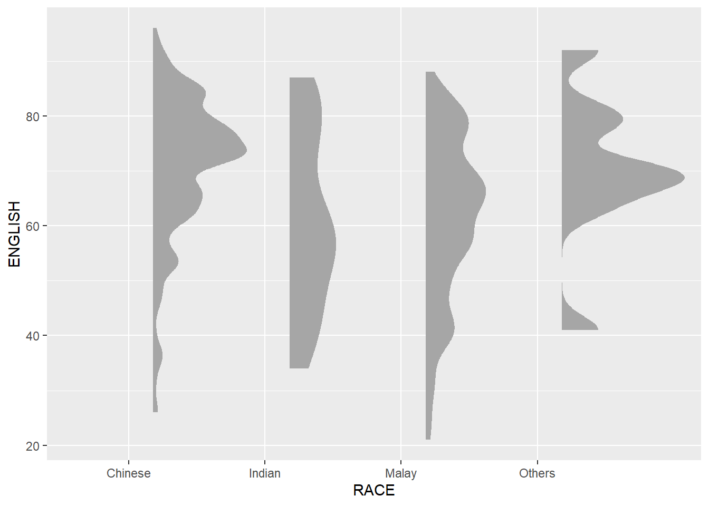

pacman::p_load(ggdist, ggridges, ggthemes,
colorspace, tidyverse)Hands-on Exrecise 4a
Getting Started
Objective of this exercise:
Learn about new graphs: ridgeline plot and raincloud plot to plot uncertainty
Use ggridge library to plot ridgeline plot and ggdist library to plot raincloud plot
Import Libraries
The libraries used in this exercise would be:
ggridges: create ridgeline plots in ggplot2
ggdist: provide ggplot2 geoms and stats designed for visualizing distribution and uncertainty
tidyverse
ggthemes
colorspace: toolbox for manipulating anf assessing colors and palettes
Import Data
exam <- read_csv("Exam_data.csv")Graphic Methods to Visualize Distribution
Ridgeline Plot

Main point:
Data visualization technique used to study the distribution of numeric variable for several variable
When to use it: when a variable has 3 to 4 groups or more, and you want to compare the distribution of the groups
Note: rank them according to the pattern (e.g. highest to lowest or lowest to highest) to provide better insight
Plotting using ggridge
There are 2 methods of plotting ridgeline plot:
geom_ridgeline(): take height values to draw ridgelinegeom_density_ridges(): estimate data density to draw ridgeline plot

ggplot(exam,
aes(x = ENGLISH,
y = CLASS)) +
geom_density_ridges(
scale = 3,
rel_min_height = 0.01,
bandwidth = 3.4,
fill = lighten("#7097BB", .3),
color = "white"
) +
scale_x_continuous(
name = "English grades",
expand = c(0, 0)
) +
scale_y_discrete(name = NULL, expand = expansion(add = c(0.2, 2.6))) +
theme_ridges()Customize Style of Ridgeline Plot
We can customize the color of the area under the ridgeline plot to be gradient by using geom_ridgeline_gradient() or geom_density_ridge_gradient()

ggplot(exam,
aes(x = ENGLISH,
y = CLASS,
fill = stat(x))) +
geom_density_ridges_gradient(
scale = 3,
rel_min_height = 0.01) +
scale_fill_viridis_c(name = "Temp. [F]",
option = "C") +
scale_x_continuous(
name = "English grades",
expand = c(0, 0)
) +
scale_y_discrete(name = NULL, expand = expansion(add = c(0.2, 2.6))) +
theme_ridges()We can also map out probabilities directly to the ridgeline plot using stat_density_ridges()

ggplot(exam,
aes(x = ENGLISH,
y = CLASS,
fill = 0.5 - abs(0.5-stat(ecdf)))) +
stat_density_ridges(geom = "density_ridges_gradient",
calc_ecdf = TRUE) +
scale_fill_viridis_c(name = "Tail probability",
direction = -1) +
theme_ridges()
Tip
Add calc_ecdf=TRUE in the stat_density_ridges()
Additionally, we can also color the ridgeline plot using quantile with geom_density_ridges_gradient() like below.

ggplot(exam,
aes(x = ENGLISH,
y = CLASS,
fill = factor(stat(quantile))
)) +
stat_density_ridges(
geom = "density_ridges_gradient",
calc_ecdf = TRUE,
quantiles = 4,
quantile_lines = TRUE) +
scale_fill_viridis_d(name = "Quartiles") +
theme_ridges()Instead of using quantile number like the graph above, we can also specify the quantiles into ranges like below.

ggplot(exam,
aes(x = ENGLISH,
y = CLASS,
fill = factor(stat(quantile))
)) +
stat_density_ridges(
geom = "density_ridges_gradient",
calc_ecdf = TRUE,
quantiles = c(0.025, 0.975)
) +
scale_fill_manual(
name = "Probability",
values = c("#FF0000A0", "#A0A0A0A0", "#0000FFA0"),
labels = c("(0, 0.025]", "(0.025, 0.975]", "(0.975, 1]")
) +
theme_ridges()Raincloud Plot
Main Point:
Data visualization technique designed to provide clear and concise summary of distribution central tendency and spread of dataset
It combines boxplot, density plot and scatterplot to give better insight of data (pattern, e.g. clustering or striation)
Tip
When to use ridgeline plot or raincloud plot ?
Ridgeline plot: want to compare the distribution of different groups and is interested in density pattern.
Raincloud plot: want to show individual data point and want to emphasize on the spread and central tendency.
Plotting using ggdist
We will plot using stat_halfeye() to plot the half-density, while removing the half-slab by adding these arguments .width = 0, point_colour = NA in the stat_halfeye() .

ggplot(exam,
aes(x = RACE,
y = ENGLISH)) +
stat_halfeye(adjust = 0.5,
justification = -0.2,
.width = 0,
point_colour = NA)Next, we will add the boxplot by adding into the graph:

ggplot(exam,
aes(x = RACE,
y = ENGLISH)) +
stat_halfeye(adjust = 0.5,
justification = -0.2,
.width = 0,
point_colour = NA) +
geom_boxplot(width = .20,
outlier.shape = NA)Next, we will add half-dotplot to show points of each data.

ggplot(exam,
aes(x = RACE,
y = ENGLISH)) +
stat_halfeye(adjust = 0.5,
justification = -0.2,
.width = 0,
point_colour = NA) +
geom_boxplot(width = .20,
outlier.shape = NA) +
stat_dots(side = "left",
justification = 1.2,
binwidth = .5,
dotsize = 2)We can also flip the graph for better readibility and add theme for better aesthetics.

ggplot(exam,
aes(x = RACE,
y = ENGLISH)) +
stat_halfeye(adjust = 0.5,
justification = -0.2,
.width = 0,
point_colour = NA) +
geom_boxplot(width = .20,
outlier.shape = NA) +
stat_dots(side = "left",
justification = 1.2,
binwidth = .5,
dotsize = 1.5) +
coord_flip() +
theme_economist()